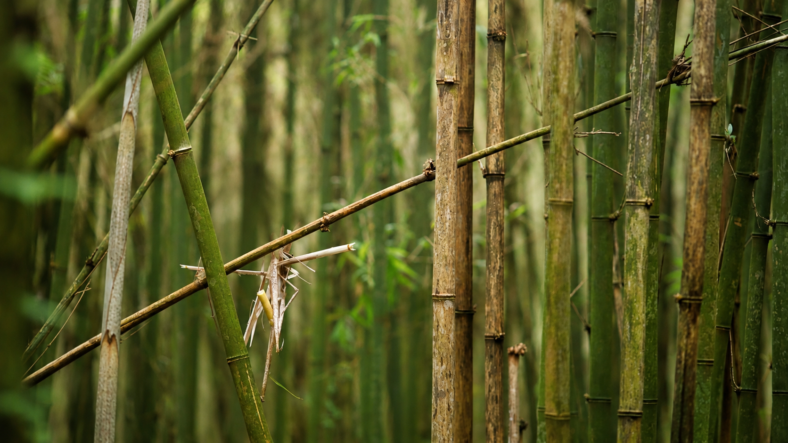
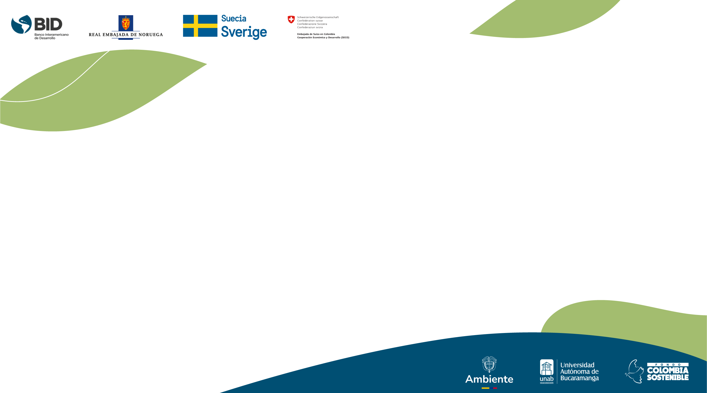
Introducción a los
ecosistemas de guadua y bambú
Video inicial
Tabla de contenido
Módulo 1
Diversidad y especies de bambúes en Colombia.
Importancia ecológica, económica, cultural y social de los ecosistemas de bambú y guadua.
Tipos de productos derivados de la guadua y el bambú.
Implementación de sistemas productivos y de restauración sostenible con especies de guadua y bambú en contextos locales.
01
02
03
04
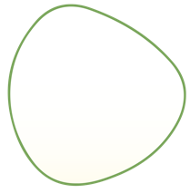
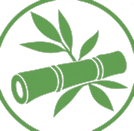
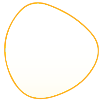
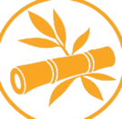
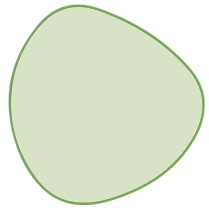
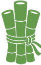
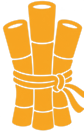
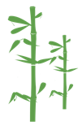
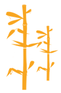
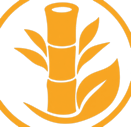
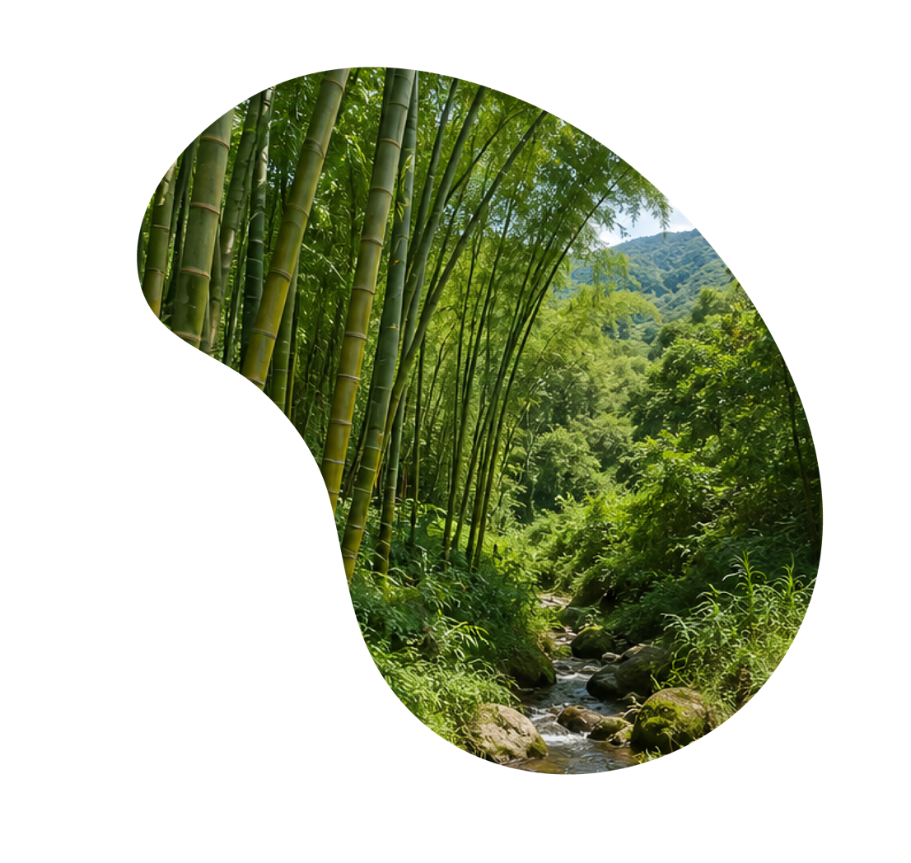
Diversidad y especies de bambúes en Colombia
Módulo 1
01
Diversidad y especies de bambúes en Colombia
Módulo 1
FAMILIA POACEAE
(Gramíneas o pastos)
SUBFAMILIA BAMBUSOIDEAE
(Bambúes)
BAMBÚES LEÑOSOS
(Estructurales)
BAMBÚES HERBÁCEOS
(No estructurales)
✓Culmos lignificados.
✓Alta resistencia y durabilidad.
✓Uso estructural y productivo.
✓Construcción, muebles, artesanías, infraestructura, entre otros.
Guadua angustifolia Kunth
(Guadua común colombiana)
Especie emblemática y estratégica en Colombia.
✓Culmos con poca o ninguna lignificación.
✓Menor resistencia estructural.
✓Menor aprovechamiento productivo.
✓Funciones ecológicas principalmente.
GÉNERO GUADUA
Grupo de bambúes leñosos del género Guadua
IDEA CLAVE
Fuentes
Judziewicz et al., 1999 .
Clark, L., Londoño, X., & Ruiz-Sanchez, E. (2015).
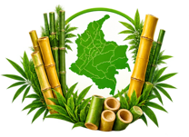
La guadua es un bambú leñoso del género Guadua.
Colombia alberga muchos otros géneros y especies de bambúes adaptadas a diferentes ecosistemas.
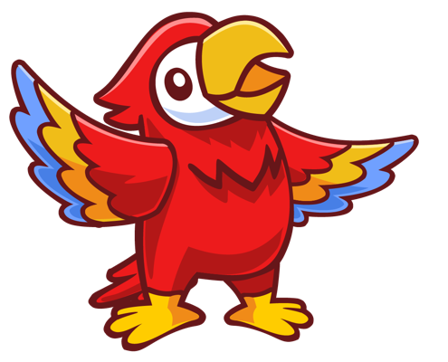
La superficie de bosques de guadua en Colombia se estima en 51.500 hectáreas, de las cuales 46.261 ha son bosques naturales y 5.260 ha cultivados. El área total de bosque natural de Guadua en los cuatro departamentos centro-occidentales representa el 44% del total nacional, con un 75% de Guadua con un tamaño entre 0,4 y 10 ha. Solo el 16-20% de esta área tiene una gestión adecuada.
Distribución en Colombia
Módulo 1
Fuentes
Londoño, X. (2001).
Clark, L., Londoño, X., & Ruiz-Sanchez, E. (2015).
CENICAFÉ. (2013). CRQ. (2020).
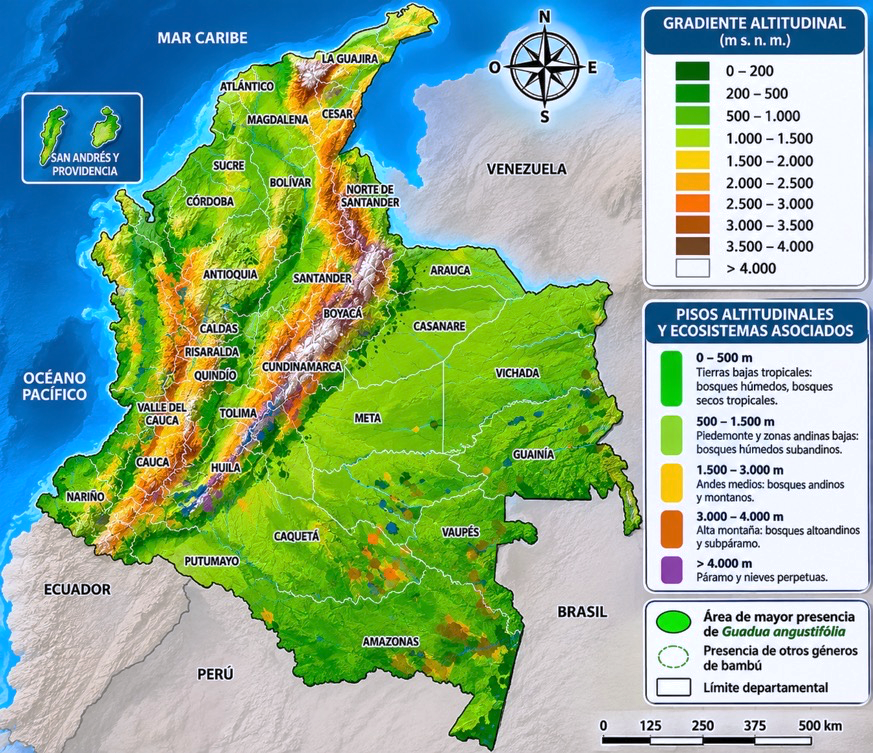
Su distribución natural se concentra principalmente en la región Andina y subandina, especialmente en departamentos como Quindío, Risaralda, Caldas, Valle del Cauca, Tolima, Huila, Santander y Antioquia, donde históricamente ha estado vinculada a sistemas productivos rurales (CENICAFÉ, 2013; CRQ, 2020).
Nota. Fuente OpenAI (2024).
Los guaduales y bambusales como cobertura
Módulo 1
Ver más
Los guaduales y bambusales se asocian a los ecosistemas boscosos en el Mapa de Ecosistemas continentales, costeros y marinos de Colombia – MEC, escala 1:100.000, 2024. Y a los bosques densos en la metodología Corine Land Cover (IDEAM, 2017).
3.1.1 Bosque denso
“Cobertura constituida por una comunidad vegetal dominada por elementos típicamente arbóreos, los cuales forman un estrato de copas (dosel) más o menos continuo cuya área de cobertura arbórea representa más del 70% del área total de la unidad, y con altura del dosel superior a cinco metros. Estas formaciones vegetales no han sido intervenidas o su intervención ha sido selectiva y no ha alterado su estructura original y las características funcionales (IGAC, 1999). Se exceptúan de esta unidad los bosques fragmentados, los cuales se clasifican en la unidad 3.1.3.
Fuentes
IDEAM (2017).
Incluye:
✓Áreas con una cobertura densa de palmas naturales, cuando la formación vegetal presenta la altura mínima y el área es superior a 25 ha (en Colombia, se pueden presentar asociaciones vegetales con predominio de palmas como el naidizal y el morichal).
✓Áreas con una cobertura densa de guadua, cuando la formación vegetal presenta la altura mínima y el área es superior a 25 ha (guaduales).
✓Formaciones arbóreas secundarias regeneradas de manera natural que han alcanzado la densidad y altura de bosque natural.
✓Afloramientos rocosos incluidos dentro del bosque natural con área menor a 25 ha.
Pon a prueba tus conocimientos
Módulo 1
En Colombia solo existe una especie de guadua y bambú
¡Selecciona la respuesta correcta!
a.
Verdadero
b.
Falso
Retroalimentación:
¡Acertaste!
Estás construyendo muy bien tu aprendizaje.
Continuar
Retroalimentación:
Es incorrecto, puedes intentarlo de nuevo.
Reintentar
Pon a prueba tus conocimientos
Módulo 1
El bambú y la guadua hacen parte de la misma familia que la caña de azúcar
¡Selecciona la respuesta correcta!
a.
Verdadero
b.
Falso
Retroalimentación:
¡Acertaste!
Estás construyendo muy bien tu aprendizaje.
Continuar
Retroalimentación:
Es incorrecto, puedes intentarlo de nuevo.
Reintentar
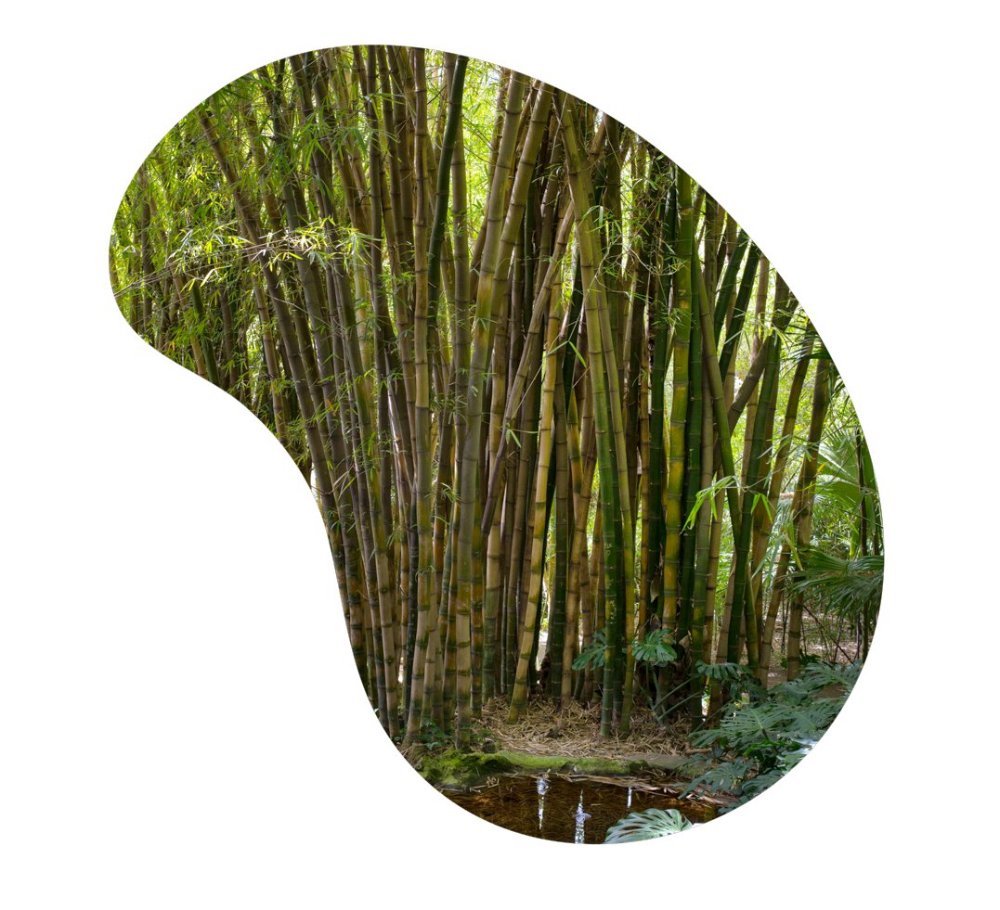
Importancia ecológica, económica, cultural y social de los ecosistemas de bambú y guadua.
Módulo 1
02
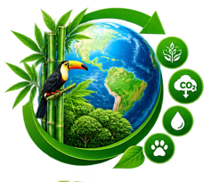
Importancia ecológica del bambú y guadua
Módulo 1
PROTECCIÓN DE RONDAS HÍDRICAS
ESTABILIZACIÓN DE SUELOS
CONTROL DE EROSIÓN
CAPTURA Y ALMACENAMIENTO DE CARBONO
HÁBITAT PARA FAUNA Y FLORA
CONECTIVIDAD ECOLÓGICA
Los guaduales actúan como barrera natural que protege ríos y quebradas, manteniendo la calidad y disponibilidad del agua.
Sus raíces densas y profundas mejoran la estructura del suelo, reduciendo deslizamientos y pérdida de tierra.
Disminuye el impacto de la lluvia y el escurrimiento superficial, previniendo procesos erosivos en laderas y riberas.
La guadua protege, regula y sostiene funciones ecológicas esenciales para los territorios.
La guadua tiene alta capacidad de captura de carbono en su biomasa y en el suelo, contribuyendo a la mitigación del cambio climático.
Ofrece refugio, alimento y sitios de reproducción para numerosas especies de fauna y flora,
aumentando la biodiversidad.
Los guaduales conectan fragmentos de vegetación, facilitando el flujo de especies y procesos ecológicos en el paisaje.
Importancia económica del bambú y guadua
Módulo 1
1. Vivienda: soluciones de vivienda
rural y urbana con guadua.
Dato importante: la guadua genera ingresos rurales y empleo local.
Fuentes
Ministerio de Agricultura y Desarrollo Rural (2022).
INBAR (2018).
DNP (2020).
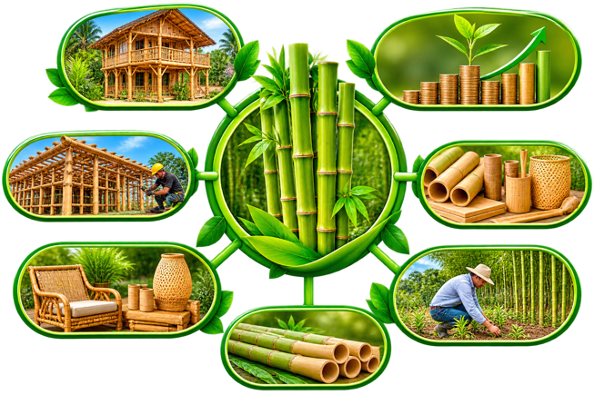
2. Bioconstrucción: estructuras
sostenibles para edificaciones
e infraestructura.
3. Tableros: productos derivados
para múltiples aplicaciones.
4. Muebles: mobiliario funcional y estético
para hogares y espacios comerciales.
5. Artesanías: productos artesanales
que preservan saberes tradicionales.
6. Biomateriales: desarrollo de materiales
innovadores a partir de guadua.
7. Bioeconomía: valor agregado,
innovación y nuevos mercados para
una economía sostenible.
Genera empleo local, dinamiza la economía rural, fortalece cadenas locales, promueve el uso sostenible e impulsa el trabajo comunitario.
Módulo 1
Importancia cultural y social del bambú y la guadua
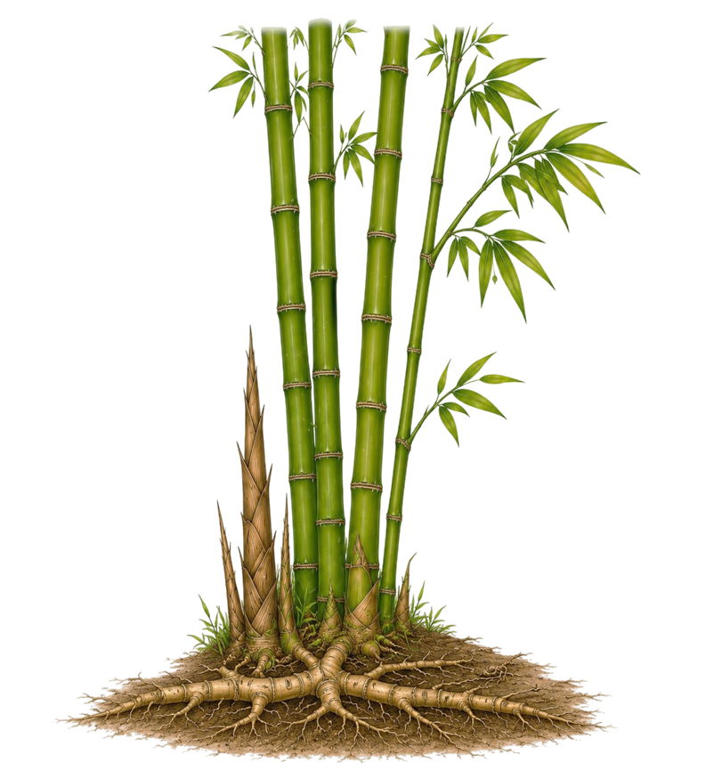
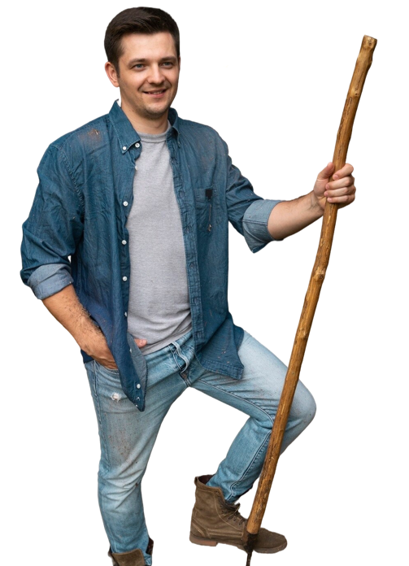
La guadua hace parte de nuestra historia, identidad y bienestar comunitario
IDENTIDAD CULTURAL
EDUCACIÓN Y CONCIENCIA
ARQUITECTURA Y PATRIMONIO
SABERES TRADICIONALES
COHESIÓN SOCIAL Y ORGANIZACIÓN
SERVICIOS ECOSISTÉMICOS Y BIENESTAR
Fuentes
Congreso de la República de Colombia (2022).
Ministerio de Cultura de Colombia (2011).
UNESCO (2011).
La guadua es parte de la identidad de muchas regiones de Colombia, especialmente del Paisaje Cultural Cafetero y otros territorios.
Material tradicional en la arquitectura rural y urbana, que da identidad, belleza y armonía al paisaje.
La guadua fortalece el tejido social, las prácticas comunitarias y la organización local.
Se promueven valores ambientales y productivos en todos los niveles educativos.
La guadua es herramienta de aprendizaje para la sostenibilidad.
Recuperación y transmisión de conocimientos ancestrales sobre el manejo, uso y técnicas constructivas con guadua.
Mejora la calidad de vida, la seguridad hídrica y el bienestar de las comunidades.
Pon a prueba tus conocimientos
Módulo 1
Las especies de guadua y bambú pueden ser empleadas en el sector de la construcción
¡Selecciona la respuesta correcta!
a.
Verdadero
b.
Falso
Retroalimentación:
¡Acertaste!
Estás construyendo muy bien tu aprendizaje.
Continuar
Retroalimentación:
Es incorrecto, puedes intentarlo de nuevo.
Reintentar
Pon a prueba tus conocimientos
Módulo 1
En Colombia los guaduales y bambusales hacen parte de la identidad cultural del país, especialmente en la región del eje cafetero
¡Selecciona la respuesta correcta!
a.
Verdadero
b.
Falso
Retroalimentación:
¡Acertaste!
Estás construyendo muy bien tu aprendizaje.
Continuar
Retroalimentación:
Es incorrecto, puedes intentarlo de nuevo.
Reintentar
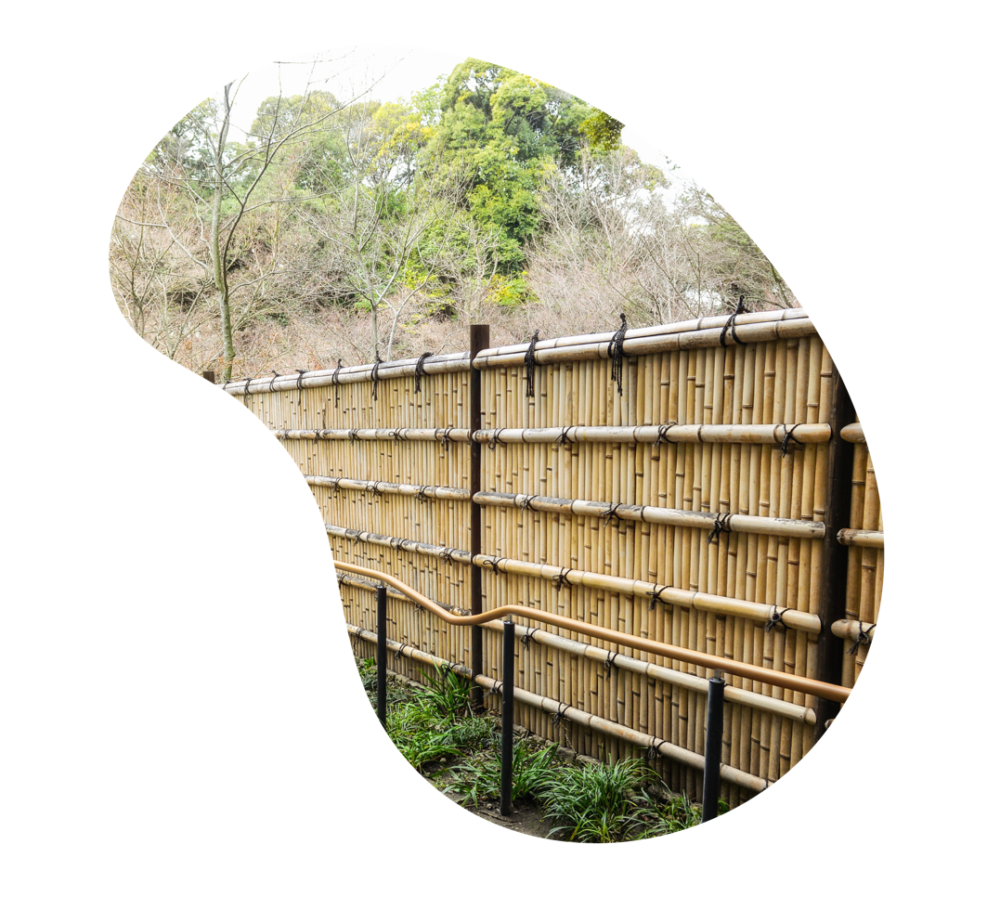
Tipos de productos derivados de la guadua y el bambú
Módulo 1
03
Estadios de desarrollo fisiológico
Módulo 1
Fuentes
Congreso de la República de Colombia (2022).
Ministerio de Ambiente y Desarrollo Sostenible (2016).
Londoño (2014).
INBAR (2018).
FAO (2020).
RENUEVO O REBROTE
01
VERDE/JUVENIL O VICHE
02
MADURO
03
SOBREMADURO
04
SECO
05
El reconocimiento de los estadios fisiológicos permite orientar el manejo sostenible, monitoreo y aprovechamiento adecuado de guaduales y bambusales.
Dinámica fisiológica del culmo
3. Madurez (Maduro)
4. Senescencia (Sobremaduro)
5. Secamiento (Seco)
1. Emergencia (Renuevo)
2. Desarrollo (Juvenil / Viche)
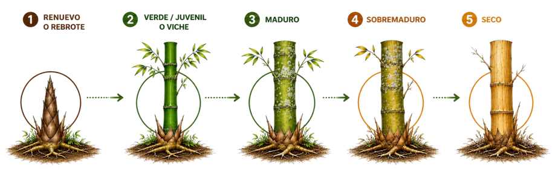
Da clic sobre cada uno de los numerales
Nota. Fuente OpenAI (2024).
✓Nuevos culmos que emergen del rizoma producto de la propagación vegetativa.
✓Cubiertos de hojas caulinares de color café oscuro.
✓Sin hojas de follaje, ni ramas laterales.
✓Culmos verdes lustrosos.
✓Con ramas y hojas presentes.
✓Nudos de color blanco intenso.
✓Sin hojas caulinares en la parte basal y pérdida paulatina de las mismas.
✓Culmo opaco verde a amarillento.
✓Manchas grisáceas arrosetadas de forma parcialmente baja, por la presencia de líquenes.
✓Alta resistencia estructural.
✓Culmo verde amarillento.
✓Manchas grisáceas arrosetadas de forma parcialmente alta por la presencia de líquenes.
✓Menor vigor fisiológico.
✓Culmos generalmente amarillos.
✓Sin ninguna actividad fisiológica.
✓Extracción sanitaria.
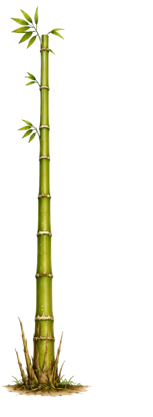
Productos obtenidos del culmo
Módulo 1
CULMO
Producto que va desde la base hasta el ápice y puede ser de diferentes dimensiones.
Corresponde a la totalidad de la guadua.
Este puede seccionarse para obtener productos derivados de transformación primaria.
F. LATA O LATILLA
Subproducto de primera transformación que se obtiene mediante corte longitudinal del tallo o culmo de diferentes dimensiones según su uso.
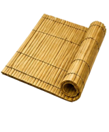
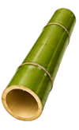
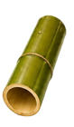
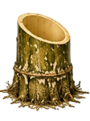
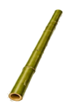
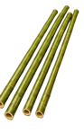
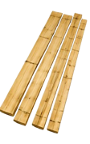
Fuentes
Ministerio de Agricultura y Desarrollo Rural (2022).
Ministerio de Ambiente y Desarrollo Sostenible (2016).
INBAR (2018).
G. ESTERILLA
Subproducto de primera transformación que se obtiene mediante picado en los nudos y apertura longitudinal de la basa o sobrebasa.
E. PUNTAL
Parte final de la guadua, cuya dimensión no supera los tres (3) metros.
A. CEPA
Extremo inferior del culmo que va desde la superficie del piso a una altura de hasta tres (3) metros.
C. SOBREBASA
Sección del tallo que corresponde al siguiente segmento después de la basa y es utilizada como tacos para la construcción.
D. VARILLÓN O ALFARDA
Sección de menor diámetro del tallo o culmo, con longitudes hasta de 4 metros.
B. BASA
Siguiente segmento después de la cepa y puede tener una longitud de 4 a 8 metros; se considera la pieza de mayor importancia desde el punto de vista comercial.
Nota. Fuente OpenAI (2024).
Otros productos potenciales
Módulo 1
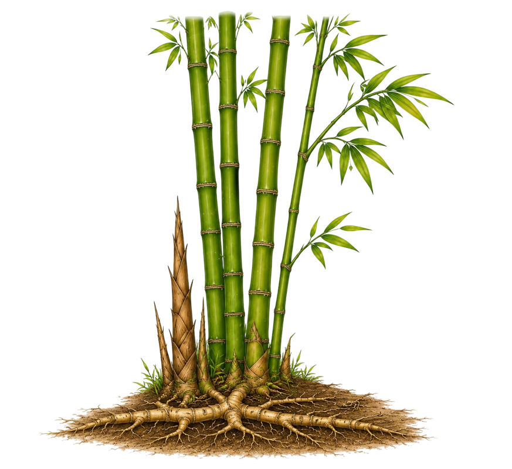
Fuentes
Ministerio de Agricultura y Desarrollo Rural (2022).
Ministerio de Ambiente y Desarrollo Sostenible (2016).
INBAR (2018).
✓Eje secundario de un tallo o culmo que se origina en los nudos.
✓En ella se localizan las hojas de follaje.
C. HOJA DE FOLLAJE
✓Tallo carnoso que crece horizontalmente debajo de la superficie del suelo.
✓Es equivalente a la raíz de la planta.
✓A diferencia de las raíces verdaderas, los rizomas tienen nudos, yemas y hojas diminutas.
✓No mueren cuando se cortan.
✓Yema
✓Nudo
✓Raíces adventicias
✓Hoja diminuta
Partes del rizoma
E. RIZOMA
D. RAMA
✓Hojas de las ramas del culmo.
✓Son alargadas, generalmente verdes y sin pubescencia.
✓Constan de lámina, pseudopecíolo y vaina.
✓Son más persistentes en el tiempo que las hojas caulinares.
Partes de la hoja de follaje
✓Lámina
✓Pseudopecíolo
✓Vaina
A. MATAMBA
B. HOJA CAULINAR
También se conoce como capacho o bráctea.
Partes de la hoja caulinar
✓Hoja modificada de forma triangular.
✓Puede tener o no pubescencia.
✓De color café.
✓Larga y coriácea.
✓Consta de vaina, lámina y lígula interna.
✓Se encuentra en el rizoma y en el tallo durante los primeros estados de crecimiento y en las primeras ramificaciones de la planta donde existen nudos con yemas.
✓Su dimensión es variable según la edad y la parte de la planta donde se desarrolle.
✓Su función es proteger la yema.
✓Culmos que cumplen todo su ciclo vegetativo.
✓Se caracterizan por presentar diámetros iguales o inferiores a cinco (5) centímetros.
✓Diámetro: ≤ 5 cm.
✓Lámina
✓Lígula interna
✓Vaina
Nota. Fuente OpenAI (2024).
PRODUCTOS SECUNDARIOS O DE SEGUNDO GRADO DE TRANSFORMACIÓN O TERMINADOS
Productos y subproductos obtenidos mediante diferentes procesos de transformación, grados de elaboración o de acabado industrial con mayor valor agregado, a partir de las piezas de guadua y bambú.
Productos obtenidos del culmo
Módulo 1
Fuentes
Ministerio de Agricultura y Desarrollo Rural (2022).
Ministerio de Ambiente y Desarrollo Sostenible (2016).
INBAR (2018).
Productos artesanales de uso decorativo, cultural y utilitario.
Productos laminados.
Bambú strand woven.
Para laminados y otros compuestos.
Utensilios.
Envases.
Accesorios.
Pisos.
Puertas.
Lámparas y más.
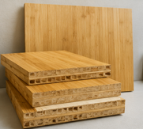
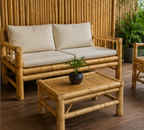
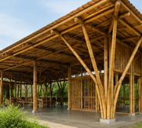
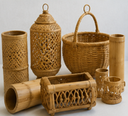
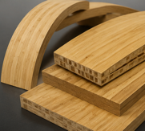
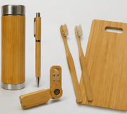
Tableros laminados.
Contrachapados.
Aglomerados.
Paneles estructurales.
Tableros y paneles
Elementos estructurales.
Revestimientos.
Pisos.
Cubiertas y sistemas constructivos.
Construcción
Muebles para interior y exterior con diseño funcional y sostenible.
Muebles
Artesanías
Laminados y compuestos
Otros productos terminados
Nota. Fuente OpenAI (2024).
Pon a prueba tus conocimientos
Módulo 1
Los productos primarios de guadua y bambú no han sido sometidos a ningún proceso de dimensionamiento
¡Selecciona la respuesta correcta!
a.
Verdadero
b.
Falso
Retroalimentación:
¡Acertaste!
Estás construyendo muy bien tu aprendizaje.
Continuar
Retroalimentación:
Es incorrecto, puedes intentarlo de nuevo.
Reintentar
Pon a prueba tus conocimientos
Módulo 1
De la guadua y bambú únicamente se puede aprovechar y elaborar productos a partir del culmo
¡Selecciona la respuesta correcta!
a.
Verdadero
b.
Falso
Retroalimentación:
¡Acertaste!
Estás construyendo muy bien tu aprendizaje.
Continuar
Retroalimentación:
Es incorrecto, puedes intentarlo de nuevo.
Reintentar
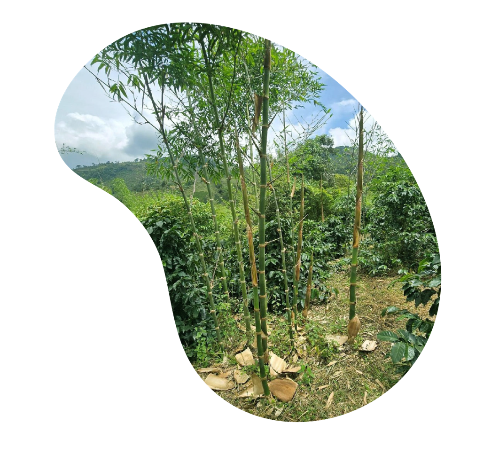
Implementación de sistemas productivos y de restauración sostenible con especies de guadua y bambú en contextos locales
Módulo 1
04
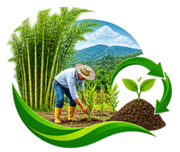
La implementación de especies de guadua y bambú en contextos locales puede realizarse de múltiples maneras, dependiendo de las características biofísicas del territorio, las necesidades de las comunidades y los objetivos de manejo que se busquen alcanzar.
Sistemas productivos
Módulo 1
Fuentes
Centro para la Investigación en Sistemas Sostenibles de Producción Agropecuaria (2021).
FAO (2020).
INBAR (2018).
Society for Ecological Restoration (2019).
Más que modelos únicos, se trata de soluciones flexibles capaces de integrar producción, restauración y sostenibilidad.
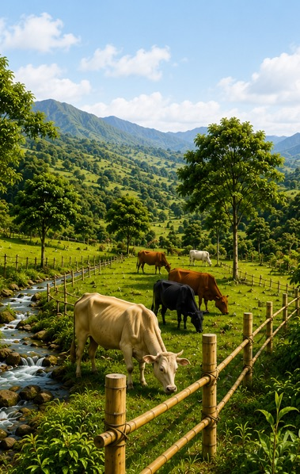
Arreglos silvopastoriles
Sistemas productivos
Módulo 1
Fuentes
Centro para la Investigación en Sistemas Sostenibles de Producción Agropecuaria (2021).
FAO (2020).
INBAR (2018).
Society for Ecological Restoration (2019).
Los arreglos silvopastoriles incorporan la guadua dentro de sistemas ganaderos. En estos contextos, puede establecerse en cercas vivas, franjas de protección de quebradas o áreas de sombra para el ganado. Su presencia favorece la estabilización de los suelos, reduce los procesos erosivos y contribuye a la regulación hídrica, mientras complementa las actividades productivas del predio. De esta manera, la producción pecuaria puede coexistir con elementos de conservación del paisaje.
Nota. Fuente OpenAI (2024).
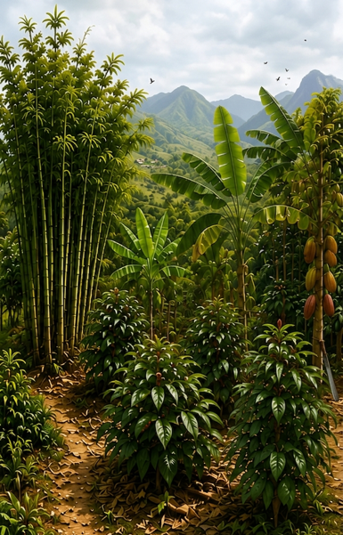
Sistemas agroforestales
Sistemas productivos
Módulo 1
Fuentes
Centro para la Investigación en Sistemas Sostenibles de Producción Agropecuaria (2021).
FAO (2020).
INBAR (2018).
Society for Ecological Restoration (2019).
Un sistema agroforestal integra cultivos agrícolas como café, cacao, plátano u otras especies con bambú o guadua. Estos arreglos permiten diversificar la producción, mejorar las condiciones microclimáticas del sistema, favorecer la conservación del suelo y generar oportunidades futuras para el aprovechamiento de productos derivados del bambú. Además, aumentan la resiliencia productiva frente a las variaciones climáticas y económicas.
Nota. Fuente OpenAI (2024).
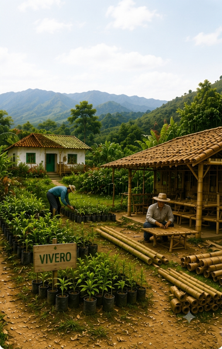
Sistemas multipropósito comunitarios
Sistemas productivos
Módulo 1
Fuentes
Centro para la Investigación en Sistemas Sostenibles de Producción Agropecuaria (2021).
FAO (2020).
INBAR (2018).
Society for Ecological Restoration (2019).
Un sistema multipropósito comunitario articula la guadua y el bambú con viveros, procesos de transformación artesanal y usos locales del material vegetal. Este tipo de iniciativas puede fortalecer las capacidades comunitarias, promover el uso sostenible de la biodiversidad y generar alternativas económicas vinculadas a la construcción, las artesanías, la restauración ecológica y la producción local.
Nota. Fuente OpenAI (2024).
Sistemas de restauración
Módulo 1
Etapas del proceso
Beneficios ecológicos
Fragmento de bosque
Área degradada.
Corredor de guadua y bambú.
Ronda hídrica restaurada.
Haz clic en cada botón para conocer su información
Fuentes
Centro para la Investigación en Sistemas Sostenibles de Producción Agropecuaria (2021).
FAO (2020).
INBAR (2018).
Society for Ecological Restoration (2019).
Ecosistema conectado.
1
2
3
4
5
| Componente | Beneficio |
|---|---|
| Fauna | Facilita el hábitat y el movimiento entre fragmentos. |
| Semillas | Favorece la dispersión y la regeneración natural. |
| Agua | Contribuye a la regulación hídrica y mejora la calidad del agua. |
1. Fragmento de guadual y bambusal categoría 1
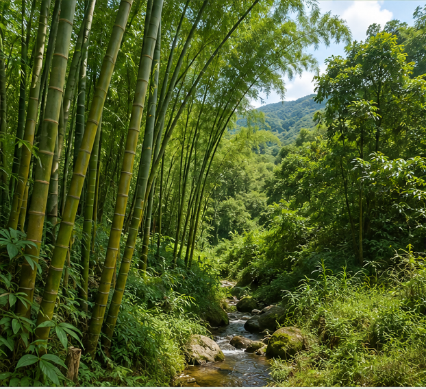
Nota. Fuente OpenAI (2024).
Etapas del proceso
Fragmento de bosque
Área degradada.
Corredor de guadua y bambú.
Ronda hídrica restaurada.
Ecosistema conectado.
1
2
3
4
5
2. Área degradada
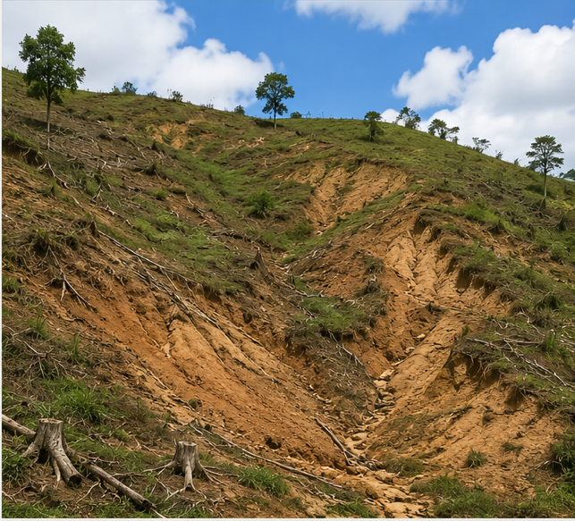
Nota. Fuente OpenAI (2024).
Etapas del proceso
Fragmento de bosque
Área degradada.
Corredor de guadua y bambú.
Ronda hídrica restaurada.
Ecosistema conectado.
1
2
3
4
5
3. Corredor con guadua y bambú
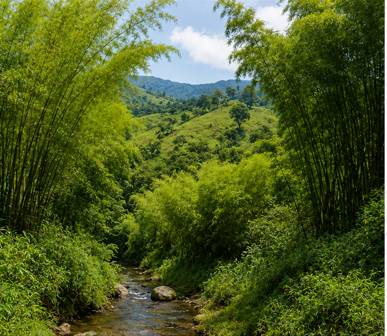
Nota. Fuente OpenAI (2024).
Etapas del proceso
Fragmento de bosque
Área degradada.
Corredor de guadua y bambú.
Ronda hídrica restaurada.
Ecosistema conectado.
1
2
3
4
5
4. Ronda hídrica restaurada
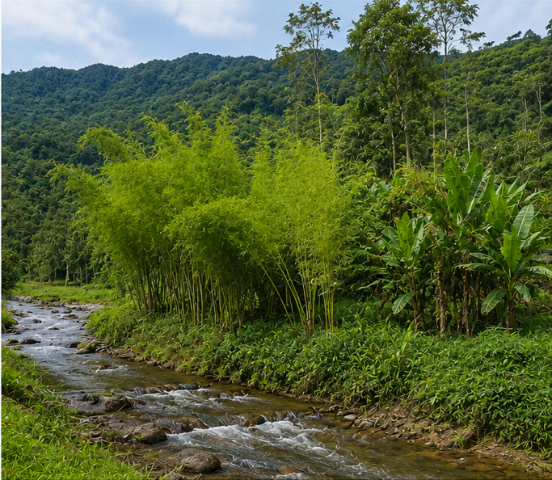
Nota. Fuente OpenAI (2024).
Etapas del proceso
Fragmento de bosque
Área degradada.
Corredor de guadua y bambú.
Ronda hídrica restaurada.
Ecosistema conectado.
1
2
3
4
5
5. Ecosistema conectado
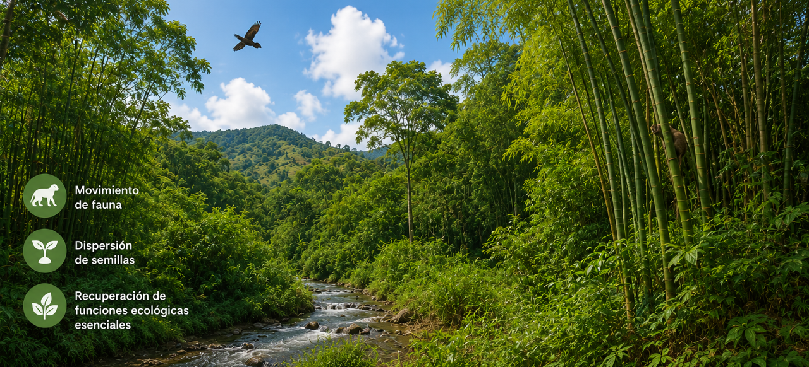
Nota. Fuente OpenAI (2024).
Etapas del proceso
Fragmento de bosque
Área degradada.
Corredor de guadua y bambú.
Ronda hídrica restaurada.
Ecosistema conectado.
1
2
3
4
5
Pon a prueba tus conocimientos
Módulo 1
La guadua y el bambú no pueden ser empleados en sistemas productivos y de restauración
¡Selecciona la respuesta correcta!
a.
Verdadero
b.
Falso
Retroalimentación:
¡Acertaste!
Estás construyendo muy bien tu aprendizaje.
Continuar
Retroalimentación:
Es incorrecto, puedes intentarlo de nuevo.
Reintentar
Conclusiones
Módulo 1
¿Qué aprendimos?
Mensaje clave
Ahora conocemos qué son los guaduales y bambusales, cuál es su importancia para los territorios, qué productos pueden obtenerse de ellos y cómo pueden contribuir al desarrollo sostenible y a la restauración ecológica.
Colombia alberga una gran diversidad de especies de bambú, entre ellas la guadua, una de las especies más importantes por su valor ecológico, económico, cultural y social.
Los guaduales y bambusales cumplen funciones fundamentales para la protección del agua, la conservación del suelo, la conectividad ecológica, la biodiversidad y la captura de carbono.
La guadua y el bambú generan oportunidades de desarrollo local mediante actividades relacionadas con la construcción, la artesanía, la producción de muebles, los biomateriales y otros productos con valor agregado.
El conocimiento de los estadios de desarrollo fisiológico y de las diferentes partes de la planta permite promover un aprovechamiento sostenible y responsable del recurso.
La guadua y el bambú pueden integrarse en sistemas productivos, agroforestales, silvopastoriles y procesos de restauración ecológica, contribuyendo simultáneamente a la conservación y al bienestar de las comunidades.
En el siguiente módulo exploraremos el marco normativo que regula los guaduales y bambusales en Colombia, incluyendo la Ley 2206 de 2022, el Decreto 1076 de 2015 y la Resolución 1740 de 2016.
Pero para que su manejo, aprovechamiento, transformación, comercialización y movilización se realicen de manera legal y sostenible, es necesario conocer las reglas que orientan su uso.
Módulo 1
Bibliografía
Centro para la Investigación en Sistemas Sostenibles de Producción Agropecuaria (CIPAV). (2021). ¿Qué hacemos?. https://cipav.org.co
Centro Nacional de Investigaciones de Café (CENICAFÉ). (2013). Somos el Centro Nacional de Investigaciones de Café. https://www.cenicafe.org
Clark, L., Londoño, X., & Ruiz-Sanchez, E. (2015). Bamboo taxonomy and habitat diversity. En W. Liese & M. Köhl (Eds.), Bamboo: The plant and its uses (pp. 1–30). Springer. https://link.springer.com/book/10.1007/978-3-319-14133-6
Congreso de la República de Colombia. (2022). Ley 2206 de 2022. Por medio del cual se incentiva el uso productivo de la guadua y el bambú y su sostenibilidad ambiental en el territorio Nacional. Diario Oficial Nº 52.037. http://www.secretariasenado.gov.co/senado/basedoc/ley_2206_2022.html
Corporación Autónoma Regional del Quindío (CRQ). (2020). Noticias. https://crq.gov.co/category/noticias/
Ministerio de Ambiente y Desarrollo Sostenible de Colombia. (2019). Decreto 1532 de 2019. Por medio del cual se modifica la Sección 1 del Capítulo 1 del Título 2 de la Parte 2 del Libro 2 y se sustituye la Sección 12 del Capítulo 1 del Título 2 de la Parte 2 del Libro 2 del Decreto Único Reglamentario del Sector Ambiente y Desarrollo Sostenible 1076 de 2015, en relación con las plantaciones forestales. https://www.minambiente.gov.co/wp-content/uploads/2021/08/decreto-1532-de-2019.p
Food and Agriculture Organization (FAO). (2020). Global Forest Resources Assessment 2020. https://www.fao.org/interactive/forest-resources-assessment/2020/en/
Instituto Humboldt (2021). Reporte de estado y tendencias de la biodiversidad continental de Colombia 2021. https://reporte.humboldt.org.co/biodiversidad/2021/
International Bamboo and Rattan Organisation (INBAR). (2018). INBAR Projects. https://www.inbar.int/inbar-projects/active-projects/
Módulo 1
Bibliografía
Londoño, X. (2001). Evaluation of bamboo resources in Latin America. International Network for Bamboo and Rattan. https://www.inbar.int/resources/inbar_publications/evaluation-of-bamboo-resources-in-latin-america/
Judziewicz, E. J., Clark, L. G., Londoño, X., & Stern, M. J. (1999). American Bamboos. Smithsonian Books. https://www.smithsonianbooks.com/store/science-nature/american-bamboos/
Ministerio de Agricultura y Desarrollo Rural. (2022). Gadua. https://sioc.minagricultura.gov.co/Guadua
Ministerio de Ambiente y Desarrollo Sostenible de Colombia. (2016). Resolución 1740 de 2016. Por la cual se establecen lineamientos generales para el manejo, aprovechamiento y establecimiento de guaduales y bambusales y se dictan otras disposiciones. https://www.minambiente.gov.co/documento-normativa/resolucion-1740-de-2016/
Ministerio de Ambiente y Desarrollo Sostenible. (2022). Noticias. https://www.minambiente.gov.co
Ministerio de Cultura de Colombia. (2011). Noticias. https://www.mincultura.gov.co
OpenAI. (2024). ChatGPT (versión del 14 de marzo) [Modelo de lenguaje amplio]. https://chat.openai.com
Society for Ecological Restoration (SER). (2019). Noticias. https://www.ser.org
UNESCO. (2011). Paisaje Cultural Cafetero de Colombia. https://whc.unesco.org/en/list/1121/
Universidad Nacional de Colombia. (2021). Catálogo de Plantas y Líquenes de Colombia. GBIF. https://www.gbif.org/es/dataset/5c0b1470-8884-4914-ae76-70a7c81d6d08
Finalizaste los contenidos del Módulo 1 con éxito.
Módulo 1
Felicitaciones
Introducción a los
ecosistemas de guadua y bambú